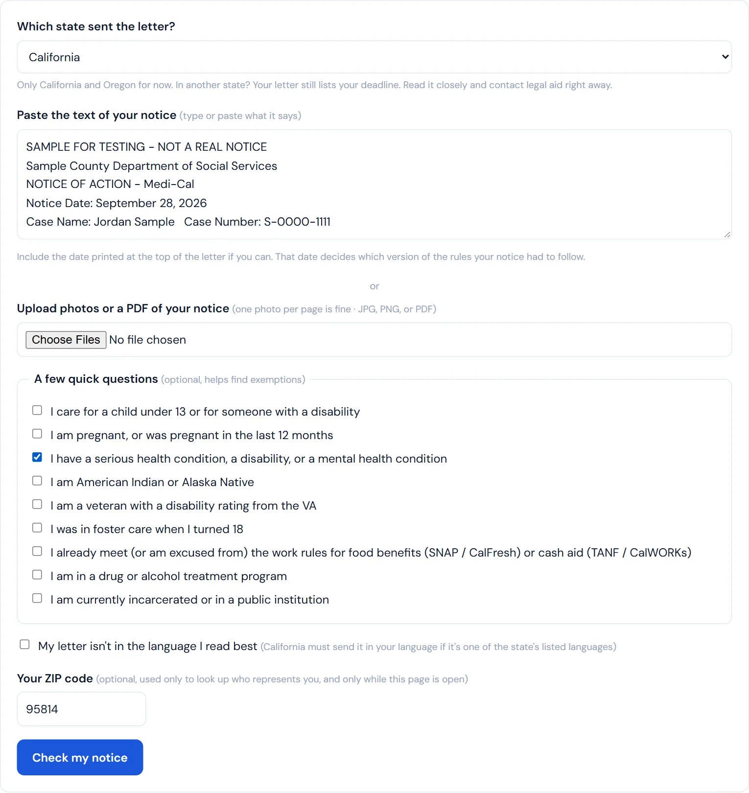
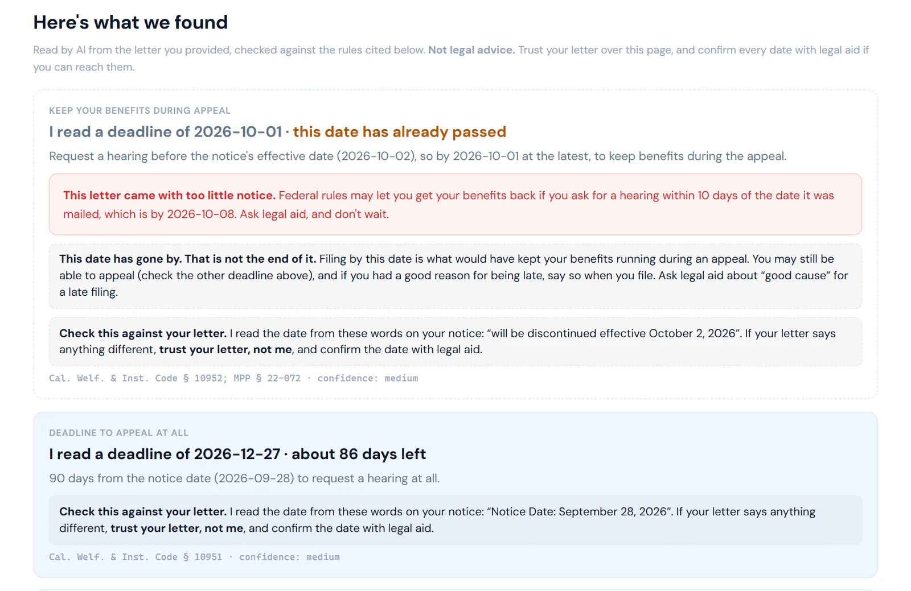
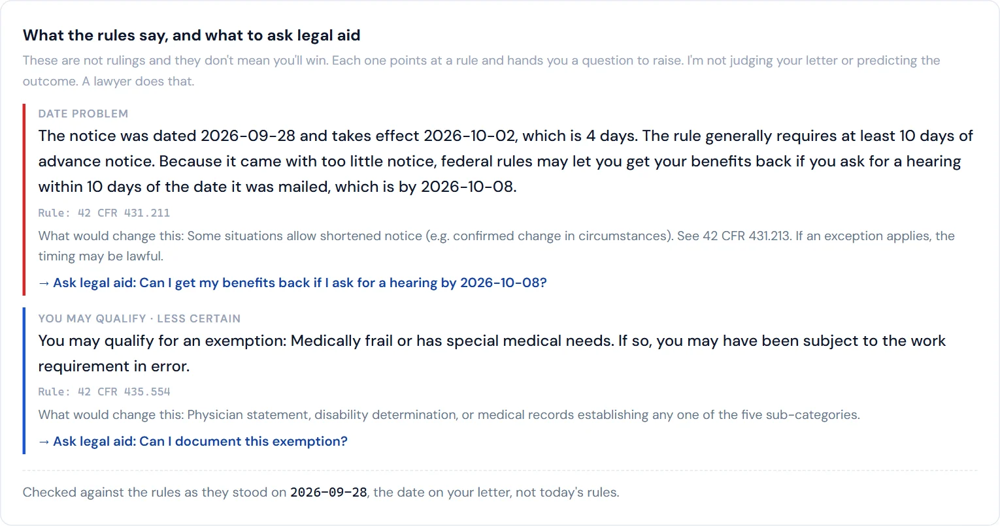
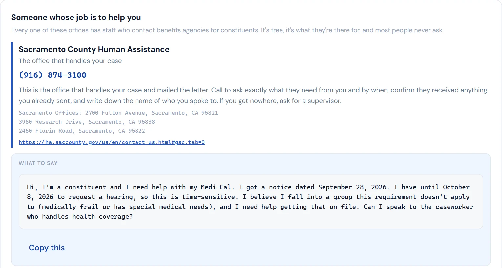
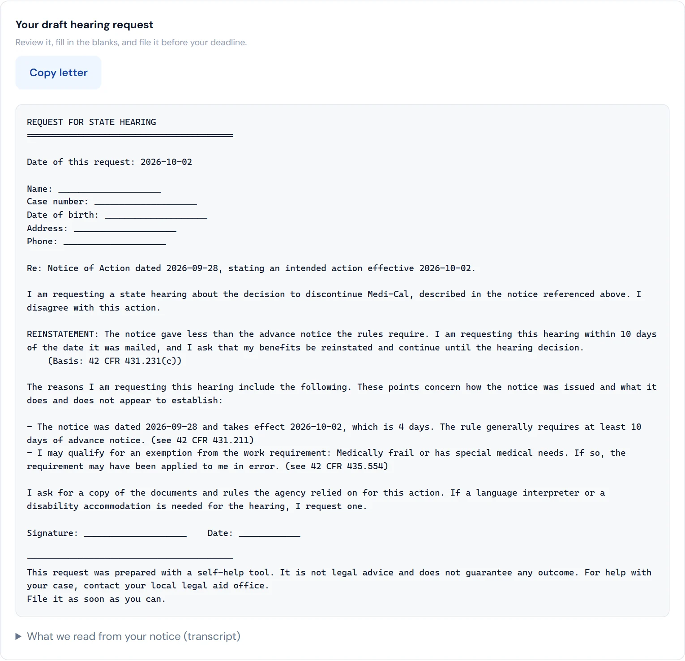

Getting a letter saying your health coverage or food benefits are ending is stressful enough. Figuring out what it means, whether something is wrong, and how to respond shouldn't be another obstacle.
I built BallotBase Civic to help people make sense of those letters and take the next step.
It's launching with two free tools: Medicaid Appeal Assistant and SNAP Appeal Assistant, both available for California and Oregon.
The Medicaid tool covers Medi-Cal in California and the Oregon Health Plan. The SNAP tool covers CalFresh in California and SNAP in Oregon. The site is available in English and Spanish, with no account required.
What the tools do
Choose your program and state, then paste your notice or upload photos or a PDF. You can photograph each page separately if that's easier.

The tools help you:
- Find the dates that matter. Identify appeal deadlines and any earlier deadline relevant to requesting continued benefits while an appeal is pending.
- Check the notice for potential problems. Flag missing explanations, hearing information, or other required details, with citations you can review.
- Identify questions worth raising. Optional questions about your circumstances help surface possible exemptions or issues to discuss with legal aid.
- Prepare a hearing request. Get a draft you can review and send.
- Figure out who to contact. Find the relevant agency and, using an optional ZIP code, your representatives' caseworkers, along with a call script.




The goal is to help you move from “I got this letter and don't know what to do” to having dates, questions, and a draft response in front of you.
How it works
AI reads the notice and pulls out details such as dates and the reason given for ending benefits. Those details are checked against supporting text in the letter. A rules engine then checks the notice and calculates deadlines, showing the citations behind its findings.
The tools are built to account for which rules applied on the notice date. If that date can't be read, the tool stops instead of assuming one.
This is an early release. The rules have not yet been reviewed by a benefits attorney. The tools provide self-help information, not legal advice or a prediction that an appeal will succeed. Use the results as a starting point to review with legal aid or someone qualified to help with your case.
Why I built it
With BallotBase, I've been building tools to make legislation and government activity easier to understand. BallotBase Civic brings that work closer to the paperwork people face in their own lives.
Understanding a policy matters. So does understanding the letter that says you might lose access to healthcare or help buying groceries.
I wanted to build something useful at that moment: help reading the notice, understanding what needs attention, and preparing a response.
Both tools are free to use. If you're dealing with a notice in California or Oregon, or helping someone who is, take a look. I'd also welcome feedback from benefits counselors, legal aid teams, and community organizations working with people through this process.
Try BallotBase Civic at civic.ballotbase.io.
Screenshots show a sample letter written for testing, not a real notice. BallotBase Civic is a self-help tool, not legal advice. If you can reach a legal aid office, do that too.